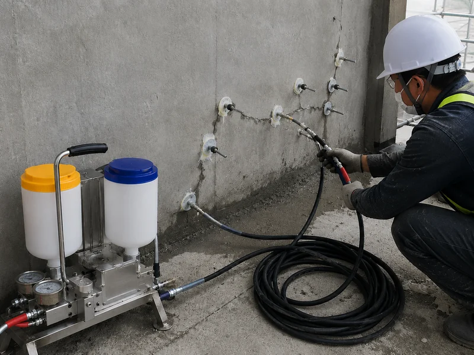

ARCHIVE
에폭시 균열주입공법 — 무엇을 위해 주입하고, 어떤 에폭시를 고르는가
에폭시 주입은 균열을 감추는 작업이 아니라 갈라진 단면을 다시 붙이는 작업입니다. 적용 목적과 KS F 4923의 위치, 건식·습식·거동 균열에 따른 재료 구분, 주입 방식과 현장 품질관리를 정리했습니다.

1. 무엇을 위해 주입하는지부터 정합니다
에폭시 균열주입은 목적이 분명한 공법입니다. 갈라진 단면 사이에 수지를 채워 경화시켜, 끊어진 단면을 다시 잇는 것입니다. 균열선이 보이지 않게 되는 것은 결과의 일부일 뿐이고, 그 자체가 목적이 되면 공법 선택이 어긋납니다.
목적이 “보기 싫은 선을 지우는 것”이라면 표면 충전이나 면보수로 충분한 경우가 많습니다. 반대로 목적이 “단면의 일체성 회복”이라면 표면만 덮는 방법으로는 아무것도 해결되지 않습니다. 견적을 받기 전에 이 두 가지 중 어느 쪽인지부터 정리하는 편이 결과가 좋습니다.
2. 적용 대상 — 어떤 균열에 주입하는가
에폭시 주입은 기본적으로 더 이상 진행되지 않는 것으로 확인된 균열을 대상으로 합니다. 균열게이지나 반복 관찰로 폭이 변하지 않는다는 것을 확인한 뒤에 검토합니다. 거동 여부를 확인하는 방법은 균열 보수 — 거동 균열과 비거동 균열의 구분에 따로 정리해 두었습니다.
- 건조하고 안정된 미세균열 — 저점도 수지 주입 검토
- 폭이 큰 안정 균열 — 점도가 높은 제품 또는 U/V컷 후 충전 검토
- 물이 흐르는 활성 누수균열 — 먼저 지수, 안정된 뒤 재판단
- 폭이 계속 변하는 거동 균열 — 원인 해결이 먼저, 경화 후 신축이 없는 재료 확정 금지
- 철근부식·박락을 동반한 균열 — 주입 단독으로 끝내지 않음
3. 기술 원리 — 침투와 경화, 그리고 접착
주입재는 표면을 실링해 새어 나갈 길을 막은 상태에서 균열 안으로 밀려 들어갑니다. 수지가 균열면에 닿아 경화하면서 양쪽 단면을 붙잡는 구조입니다. 그래서 세 가지가 동시에 성립해야 합니다. 수지가 들어갈 수 있어야 하고(점도와 주입압), 균열면에 붙을 수 있어야 하고(청결·수분 상태), 설계한 범위까지 채워져야 합니다(충전 확인).
이 중 하나라도 빠지면 겉으로는 시공이 끝난 것처럼 보이지만 단면은 이어지지 않습니다. 주입 공법의 실패 대부분은 재료 성능이 아니라 이 세 조건 중 하나가 확인되지 않은 데서 나옵니다.
4. 에폭시는 하나의 재료가 아닙니다
현장에서 가장 자주 나오는 오해가 “에폭시로 주입했다”는 말 한 줄로 재료가 정해진다고 보는 것입니다. 국내에 공급되는 보수용 에폭시는 용도에 따라 계열이 나뉘어 있습니다.
- 건식 저점도·초저점도형 — 마른 상태의 미세균열 침투용
- 중·고점도형 — 폭이 크거나 흘러내림을 막아야 하는 부위
- 습식(습윤면 부착)형 — 균열 내부나 표면에 수분이 남아 있는 조건
- 수중형 — 물속 또는 상시 젖어 있는 부위
- 탄성(연질)형 — 약간의 변형 추종이 필요한 부위
공개된 제품 시험자료를 보면 같은 보수용 에폭시라도 성질이 크게 다릅니다. 어떤 초저점도 강성형 제품은 인장강도가 수십 MPa 수준으로 제시되는 반면, 탄성형 제품은 인장강도 대신 신장률을 주요 성능으로 제시합니다. “강한 에폭시”와 “유연한 에폭시”는 다른 목적의 재료이며, 이 값들은 해당 제조사 제품의 시험값이지 모든 제품의 보증값이 아닙니다.
마른 균열에 쓰는 제품을 젖은 균열에 그대로 쓰면 경화 불량이나 접착면 파괴가 생깁니다. 재료를 고르기 전에 건식인지 습식인지, 물이 흐르는지를 먼저 확인해야 하는 이유입니다.
5. 균열폭 숫자는 절대 기준이 아닙니다
0.3mm, 0.5mm 같은 숫자가 자주 인용됩니다. 이 숫자들은 제조사가 제품별로 제시하는 적용 가능 균열폭의 예시이고, 실무에서 관습적으로 쓰이는 분기점입니다. 모든 현장에 그대로 적용되는 법정 기준선이 아닙니다.
실제로는 같은 0.3mm라도 균열 깊이, 관통 여부, 수분 상태, 부재의 역할, 주변 콘크리트 건전성에 따라 판단이 달라집니다. 폭 하나만 재서 공법을 확정하지 않고, 그 숫자를 제품 시방의 적용범위와 대조하는 방식으로 씁니다.
6. 주입 방식 — 저압이 기본, 조건에 따라 달라집니다
- 수동식 주입 — 소규모·부분 보수
- 자동식 저압 주입 — 고무줄·스프링의 복원력으로 낮은 압력을 오래 유지하는 방식. 미세균열에 널리 쓰입니다
- 기계식(자동혼합) 주입 — 대량 주입, 두꺼운 벽체, 저압으로 충전이 어려운 조건
주입구 간격도 제품마다 다르게 제시됩니다. 어떤 초저점도 제품은 15~30cm 간격을 제안하지만, 이는 그 제품의 시방이지 공통값이 아닙니다. 벽체가 두껍거나 저압 주입이 어려운 경우에는 천공 후 패커를 사용하는 방식을 검토합니다. 주입압을 무리하게 올리는 것은 해결책이 아닙니다. 과압은 주변 콘크리트를 들뜨게 하거나 균열을 오히려 키울 수 있습니다.
7. 일반적인 시공 흐름
- 조사 — 균열 위치·폭·길이·방향 기록, 거동 여부와 수분 상태 확인
- 표면 정리 — 레이턴스와 오염물 제거
- 주입구 설치 — 계획한 간격으로 좌대 부착
- 표면 실링 — 균열 표면을 밀봉해 수지가 새지 않게 함
- 주입 — 낮은 압력으로 천천히, 인접 주입구까지 도달하는지 확인
- 경화 — 제품이 정한 시간 확보
- 철거·마감 — 좌대와 실링재 제거 후 표면 정리
- 확인 — 충전 상태와 재균열 여부 점검
8. 품질관리에서 실제로 기록해야 하는 것
주입은 끝나고 나면 안이 보이지 않습니다. 그래서 시공 중에만 남길 수 있는 기록이 곧 품질 근거가 됩니다.
- 착공 전 균열도 — 날짜·스케일·사진 포함
- 재료 반입 기록 — 제품명, 로트번호, 유효기간, 시험성적서
- 배합비 — 2액형은 제조사가 정한 중량비를 배치마다 확인 (제품에 따라 3:1, 2:1 등으로 다릅니다)
- 가사시간 — 온도에 따라 크게 달라지므로 배치별 관리
- 작업 시점의 기온·표면온도·수분 상태
- 주입구별 투입량과 인접 주입구 도달 여부
- 경화 확인 — 제품이 정한 경화시간 경과 후 상태 확인
9. 제주 환경에서의 주의사항
제주는 강수량이 많고 습도가 높은 편입니다. 제주지방기상청의 1991~2020 평년값 기준으로 연강수량은 지역에 따라 약 1,182~2,030mm 범위로 편차가 크고, 연평균 풍속도 2.5~6.8m/s 범위로 지역차가 있습니다.
이 조건은 주입 공사에 그대로 영향을 줍니다. 장마철과 강우 직후에는 균열 내부가 마르지 않은 경우가 많아, 건식용 제품을 그대로 쓰면 접착이 확보되지 않습니다. 작업 전날과 당일의 강우 여부, 표면 수분 상태를 확인하고 필요하면 습식형으로 바꾸거나 건조 기간을 두는 편이 안전합니다. 해안 구조물에서는 균열 주변에 녹물·백화·박락이 함께 보이는 경우가 많은데, 이때는 주입만으로 끝내지 않고 염해와 철근부식 조사를 함께 진행합니다.
10. 관련 기준과 근거자료
- KS F 4923 콘크리트 구조물 보수용 에폭시 수지 — 균열·들뜸 보수 및 앵커핀 고정용 에폭시의 제품표준. 경질형과 연질형으로 구분됩니다. 제품 구매 시 시험성적서로 항목과 수치를 확인합니다.
- KS F 4043 콘크리트 구조물 보수용 에폭시 수지 모르타르, KS F 4042 콘크리트 구조물 보수용 폴리머 시멘트 모르타르 — 주입재가 아니라 단면 결손부 복구용입니다. 주입용 수지와 구분해 관리합니다.
- KDS 14 20 40 콘크리트구조 내구성 설계기준 — 보수·보강은 손상 원인과 범위, 하중과 저항성능, 환경조건과 요구성능을 조사한 뒤 설계하도록 하는 상위 원칙을 둡니다.
- 시공기준은 공사 종류에 따라 적용되는 코드가 다릅니다. 누수균열 보수는 KCS 41 40 17(누수보수 공사)이, 일부 시설공사에서는 해당 분야 KCS의 에폭시수지 주입공법 조항이 근거가 됩니다. 어떤 기준이 적용되는지는 그 공사의 공사시방서에서 확인하는 것이 정확합니다.
표준의 발행·개정 연도는 확인 시점에 따라 달라질 수 있습니다. 인용할 때는 국가건설기준센터와 e나라 표준인증에서 최신본을 다시 확인합니다.
11. 현장에서 자주 보게 되는 실패 유형
- 젖은 균열에 건식용 제품을 적용해 경화·접착이 확보되지 않은 경우
- 배합비를 눈대중으로 맞추거나 가사시간을 넘겨 사용한 경우
- 표면 실링이 부실해 수지가 새어 나가 내부가 채워지지 않은 경우
- 거동이 남아 있는 균열에 경화 후 신축이 없는 재료를 주입해 같은 자리가 다시 갈라진 경우
- 철근부식이 진행 중인 부위를 주입만으로 마감해 얼마 뒤 같은 자리가 다시 부푼 경우
12. 어떤 서비스로 이어지는가
안정된 균열의 주입과 단면복구는 콘크리트 보수보강에서, 물이 흐르는 활성 누수의 1차 지수는 인젝션 특수방수에서 다룹니다. 노출콘크리트 면에서 균열선까지 눈에 띄지 않게 정리해야 한다면 노출콘크리트 면보수가 이어집니다. 세 가지를 어떤 순서로 조합할지는 공법 선정 흐름에 정리해 두었습니다.